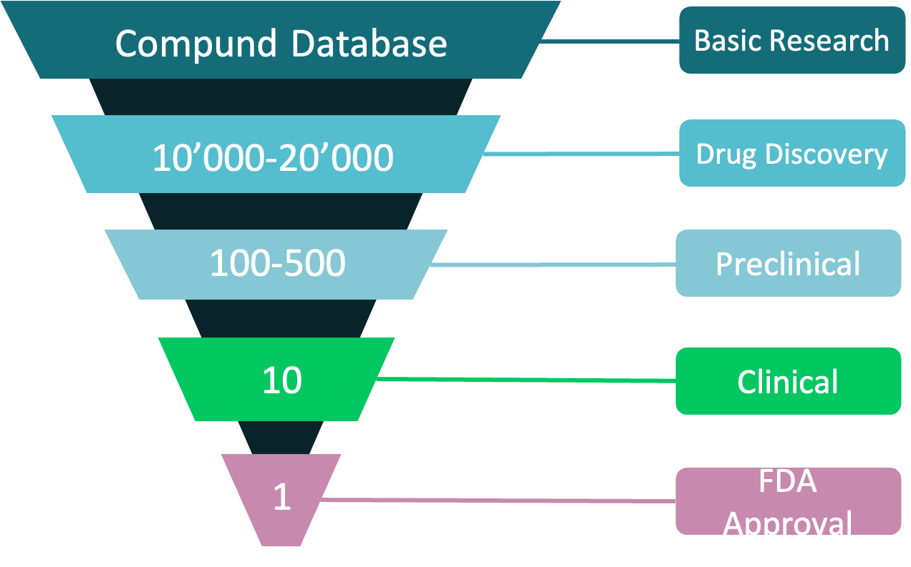

Drug discovery process has been time-consuming for a long time. Starting from target confirmation, drug discovery needs to go through a series of work including emerging compound search, generating lead compounds, lead compound optimization, and eventually the stage of pre-clinical trials and clinical trials. In the past 10 years, the cost of drug research has been increasing annually. Many researchers have resorted to in silico strategies to narrow down the ligands and accelerate the process. In general, there are two common workflows in computer-assisted drug design: one is to prepare a large drug molecule library based on targets, and select by using docking program; the other is to build a molecule generator that generates molecules based on target information, screen, and optimize the output molecule further base on screening feedback.
Figure 1. Common process of drug discovery
Peptides are widely found in biological systems and play important roles in signal transduction, such as cell division and cell growth. More importantly, some peptide molecules can also be used as antimicrobial agents such as broad-spectrum drugs. Different from small-molecule drugs, peptides usually have a shorter half-life, stronger binding capacity to target, and weaker membrane penetration capacity. With their sizes ranging between sizes of small compounds and large molecules, they can interact with some targets with higher binding affinity, thus becoming a great candidate for drug development. Nowadays, peptide drugs accounts for about 5% of the global drug market. However, peptide drug discovery differentiates from small-molecule drug discovery in certain aspects. Due to the high flexibility of the peptide, the docking simulation of the peptide and the target is complex. For example, testing on CABS-dock, blind docking of a target of 279 amino acid length with a 9 amino acid peptide takes around 13 hours. On the other hand, for small molecule docking, at the scale of 3000 atomic systems, docking using CPU takes usually only 3 seconds. As indicated above, it is difficult to screen multiple emerging compounds through large-scale docking. Therefore, we aim to add deep learning to the peptide generation and screening model to explore a novel scheme for peptide drug discovery.
In small-molecule drug discovery, there is a commonly used molecular generation model: the genetic algorithm generation model based on the random generation model. There is a general paradigm for such models: characterizer-sampler-scorer, often using sequential Generative Adversarial Networks.
Figure 2. Common generative adversarial network framework
Such models have achieved some good results on new drug discovery for single specific targets, but their limitations are also very obvious. They highly rely on training data of a single target and many similar ligand molecules for the single target. It does not meet the rising drug discovery demands for new targets.
We argue that new models for peptide drug discovery must be developed to overcome the limitations of the previous models as listed:
· Good robustness to generate peptides for multiple targets;
· Generates multiple species and large quantities of peptide molecules for further screening;
· Generate peptides with certain medicinal properties
· Ability to accurately predict peptide-protein target affinity.
Based on the above analyzed requirements, we developed Peplib Generator based on framework on Fig. 3.
Figure 3. The ligand evolution algorithm framework
[1].Muttenthaler, Markus, et al. "Trends in peptide drug discovery." Nature Reviews Drug Discovery 20.4 (2021): 309-325.
[2].Kurcinski, Mateusz, et al. "CABS-dock web server for the flexible docking of peptides to proteins without prior knowledge of the binding site." Nucleic acids research 43.W1 (2015): W419-W424.[3].Sanchez-Lengeling, Benjamin, et al. "Optimizing distributions over molecular space. An objective-reinforced generative adversarial network for inverse-design chemistry (ORGANIC)." (2017).